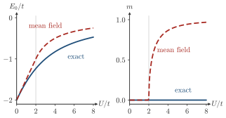

Page 9 of 12 of this session
1.12 The general interacting Hamiltonian, and the tool we will use on it
Which Hamiltonian do we want to solve, and with which tool? We will now write it in a general form, a hopping plus a quartic interaction between the electrons. The tool is mean-field theory, a variational method whose ground state can have less symmetry than the Hamiltonian.
\[H_\text{hop} = t\left(c_0^\dagger c_1 + c_1^\dagger c_0\right), \tag{1.2}\]
This is the hopping between two sites of Section 1.6. The term \(c_0^\dagger c_1\) destroys an electron at site 1 and creates one at site 0, and the second term is the reverse process. The first term of the Hamiltonian below is the same kind of term, summed over all pairs of sites \(i\) and \(j\).
We can now state the problem that this whole session leads to.
The Hamiltonians that we are interested in have the generic form
\[H = \sum_{ij} t_{ij}\, c_i^\dagger c_j \;+\; \sum_{ijkl} V_{ijkl}\, c_i^\dagger c_j^\dagger c_k c_l. \tag{1.5}\]
The quartic term, with four operators, makes the problem many-body. Mean field replaces it by a bilinear term built with expectation values, and these expectation values are solved self-consistently.
The Hamiltonian (1.5) is a free part, single-particle and exactly solvable, plus a quartic interaction. The interaction itself can come from the plain electrostatic Coulomb repulsion. It can also be an effective interaction mediated by some other quasiparticle, such as phonons, magnons or plasmons, and this can make the total interaction attractive instead of repulsive. We will treat these interactions in a phenomenological way, as given effective models, and we will not derive them microscopically from first principles.
To solve (1.5) exactly is in general impossible, for the exponential reason of Section 1.9. Mean-field theory is the tool that still allows us to obtain systematic solutions from it, even if they are approximate, and it can predict a wide range of symmetry-broken states. In this session we will study three of them, which are the same three cases that we classified in Section 1.11b.
Broken time-reversal symmetry, which is magnetism. If we run the movie of the system backward, it looks different from the original.
Broken lattice translational symmetry, which is the charge density wave. A Hamiltonian that is the same at every site at the start ends up with charge on some sites and not on others.
Broken gauge symmetry, which is superconductivity. The system develops an order parameter with a physical phase, which the symmetry of the original Hamiltonian does not allow.
The steps From the quartic term of (1.5) to a bilinear Hamiltonian
A quartic term is a product of two bilinears, \(A\) and \(B\), each with two operators. We write each of them as its expectation value plus a deviation from it, \(A=\langle A\rangle+(A-\langle A\rangle)\), and the same for \(B\). Multiplying out gives the identity
\[AB = \langle A\rangle B + A\langle B\rangle - \langle A\rangle\langle B\rangle + \big(A-\langle A\rangle\big)\big(B-\langle B\rangle\big).\]
The last term is the product of two deviations, meaning the fluctuations of \(A\) and \(B\) around their mean values. Mean field drops it, and this is the whole approximation. What is left has at most two operators in each term, so it is a single-particle Hamiltonian.
The simplest case is the Hubbard term on one site, with \(A=n_\uparrow=c_\uparrow^\dagger c_\uparrow\) and \(B=n_\downarrow\),
\[U n_\uparrow n_\downarrow \;\to\; U\big(\langle n_\uparrow\rangle n_\downarrow + n_\uparrow\langle n_\downarrow\rangle - \langle n_\uparrow\rangle\langle n_\downarrow\rangle\big).\]
An electron of spin down now feels the onsite energy \(U\langle n_\uparrow\rangle\), and an electron of spin up feels \(U\langle n_\downarrow\rangle\). The constant \(-U\langle n_\uparrow\rangle\langle n_\downarrow\rangle\) removes the interaction energy that the first two terms count twice.
A quartic term can be split into two bilinears in several ways, and three of them give the three cases above. With the densities of two neighboring sites, \(A=n_i\) and \(B=n_j\), the onsite energy of a site depends on the charge of its neighbors. The charge can then differ from site to site, which is the charge density wave of Section 1.13. With the two spins of one site, \(A=n_{i\uparrow}\) and \(B=n_{i\downarrow}\) as above, the two spins can feel different energies, which is the magnet of Section 1.14. The same Hubbard term can also be written as \(Un_\uparrow n_\downarrow=U c_\uparrow^\dagger c_\downarrow^\dagger\, c_\downarrow c_\uparrow\), and with \(A=c_\uparrow^\dagger c_\downarrow^\dagger\) and \(B=c_\downarrow c_\uparrow\) we get
\[U c_\uparrow^\dagger c_\downarrow^\dagger c_\downarrow c_\uparrow \;\to\; U\big(\langle c_\uparrow^\dagger c_\downarrow^\dagger\rangle c_\downarrow c_\uparrow + c_\uparrow^\dagger c_\downarrow^\dagger\langle c_\downarrow c_\uparrow\rangle - \langle c_\uparrow^\dagger c_\downarrow^\dagger\rangle\langle c_\downarrow c_\uparrow\rangle\big),\]
with an expectation value of two annihilation operators. This is the pairing of Section 1.15. For a repulsive \(U>0\) its self-consistent value is zero, and for an attractive \(U<0\) it can give the superconductor.
Figure 1.3 shows these three branches next to each other, together with the equation from which each one is developed and the session where it appears again.

Two of the three cases of this session come back in their own sessions, where we treat them in much more detail. Superconductivity is the topic of Session 5, and magnetism of Session 6. You can think of what follows as a first pass, whose goal is to set up the mean-field method itself, and not as the final discussion of either of them.
How good is mean field? Schematic 1.11 compares it with the exact solution of the smallest interacting system, the Hubbard dimer.

The interaction of a general Hamiltonian is the quartic term
\[\sum_{ijkl} V_{ijkl}\, c_i^\dagger c_j^\dagger c_k c_l.\]
Each term has four operators. The mean-field Hamiltonian has only two in each term. What do we do with the other two?
Show the answers
- A. ✗ False
This is false. Take the Hubbard dimer. If we drop the interaction, the spectrum is \(\pm t\) for every \(U\), and no magnetic solution can appear. The interaction is what drives the magnetization, so it cannot be dropped.
- B. ✓ True
This is true. The expectation value is a number, so the two operators that remain form a single-particle term. The number comes from the state itself, which is why we solve the problem self-consistently.
- C. ✗ False
This is false. In the vacuum \(\langle c_i^\dagger c_j\rangle=0\) for every pair. The mean field would then vanish, and a chain would have no charge modulation. In the Hartree mean field, the half-filled chain with the repulsion \(V=3t\) between neighbors ends instead with the charges \(0.95\) and \(0.05\) on alternate sites.
The self-consistent loop closes because the expectation values depend on the state that they define.
On each site the Hubbard interaction is
\[U\,n_\uparrow n_\downarrow,\]
with \(n_\sigma=c_\sigma^\dagger c_\sigma\) the number of electrons of spin \(\sigma\). Which term replaces it in mean field, with the right total energy?
Show the answers
- A. ✓ True
This is true. Each density is coupled to the mean value of the other one, and the constant removes the interaction energy that the first two terms count twice. On the dimer at \(U=4t\), in the antiferromagnetic solution with \(m=0.87\), its filled levels sum to \(0\) and the constant adds \(-0.5t\). Together this is \(\langle H\rangle\) in the mean-field state, \(-0.5t\), above the exact \(-0.83t\).
- B. ✗ False
This is false. It gives the same states, but its energy counts the interaction twice. On the dimer at \(U=4t\) its filled levels sum to \(0\), while \(\langle H\rangle\) in the mean-field state is \(-0.5t\). The difference is \(U\sum_i\langle n_{i\uparrow}\rangle\langle n_{i\downarrow}\rangle=0.5t\).
- C. ✗ False
This is false. This is a number with no operator, so the spectrum is the one of \(U=0\). The dimer then has the levels \(\pm t\) for each spin, and no moment appears for any \(U\).
Two sites share two electrons, with the Hamiltonian (1.7) of the Hubbard chain on two sites,
\[H=-t\sum_\sigma\left(c_{1\sigma}^\dagger c_{2\sigma}+c_{2\sigma}^\dagger c_{1\sigma}\right)+U\sum_{i=1,2}n_{i\uparrow}n_{i\downarrow}.\]
With \(S_z=0\) there are four states. Show that the exact ground-state energy is \(E_0=U/2-\sqrt{U^2/4+4t^2}\). What is \(E_0\) at \(U=4t\), and how does it behave at large \(U\)?
Solution
With one electron on each site we have \(|a\rangle=c_{1\uparrow}^\dagger c_{2\downarrow}^\dagger|0\rangle\) and \(|b\rangle=c_{1\downarrow}^\dagger c_{2\uparrow}^\dagger|0\rangle\), and with both electrons on one site \(|c\rangle=c_{1\uparrow}^\dagger c_{1\downarrow}^\dagger|0\rangle\) and \(|d\rangle=c_{2\uparrow}^\dagger c_{2\downarrow}^\dagger|0\rangle\). The interaction gives \(0\) to \(|a\rangle\) and \(|b\rangle\), and \(U\) to \(|c\rangle\) and \(|d\rangle\). The hopping moves one electron, and with the order of the operators above it gives
\[H|a\rangle=-t\big(|c\rangle+|d\rangle\big),\qquad H|b\rangle=t\big(|c\rangle+|d\rangle\big).\]
So \((|a\rangle+|b\rangle)/\sqrt2\), a triplet state, has the energy \(0\), and \((|c\rangle-|d\rangle)/\sqrt2\) has the energy \(U\). The singlet \(|S\rangle=(|a\rangle-|b\rangle)/\sqrt2\) couples only to \(|D\rangle=(|c\rangle+|d\rangle)/\sqrt2\), and in the basis of \(|S\rangle\) and \(|D\rangle\)
\[H=\begin{pmatrix}0&-2t\\-2t&U\end{pmatrix},\qquad E=\frac U2\pm\sqrt{\frac{U^2}{4}+4t^2}.\]
The lower sign is the ground state, \(E_0=U/2-\sqrt{U^2/4+4t^2}\). At \(U=4t\) it is \((2-2\sqrt2)\,t=-0.83\,t\). At large \(U\) we expand \(\sqrt{U^2/4+4t^2}\approx U/2+4t^2/U\), so \(E_0\approx-4t^2/U\).
The ground state is a singlet for every \(U\), so it has no moment. At large \(U\) it lies \(4t^2/U\) below the triplet, which is the exchange coupling of the Heisenberg model of Section 6.8. Mean field gains only half of this energy, as Schematic 1.11 shows.
Try it. Run the cell with the antiferromagnetic guess and watch the gap open as \(U\) grows. Then use the ferromagnetic guess of the commented line. The gap stays closed, so the two guesses end in different solutions of the same Hamiltonian.
- Section 5.4 shows how phonons give an attractive interaction, and it decouples it in the pairing channel with the same method.
- Section 6.3 applies mean field to the Hubbard model in more detail, and Section 6.7 shows where mean field breaks down.
- In Section 8.9 the same decoupling is applied to the partons of a quantum spin liquid.